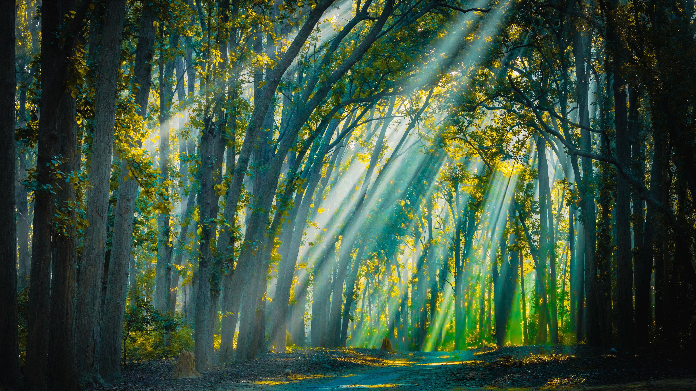
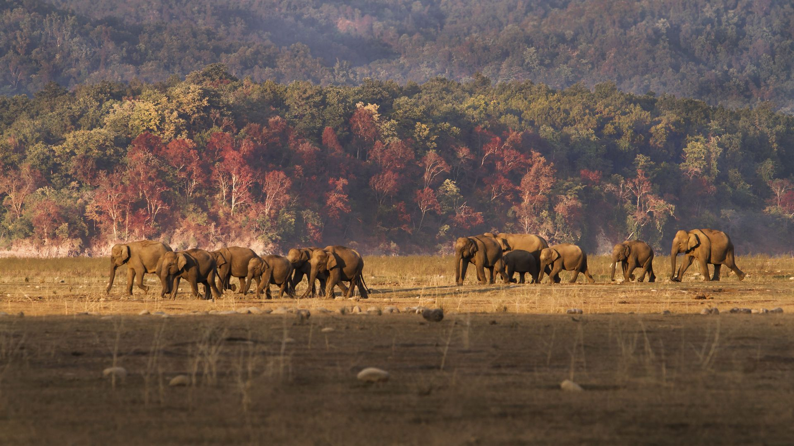
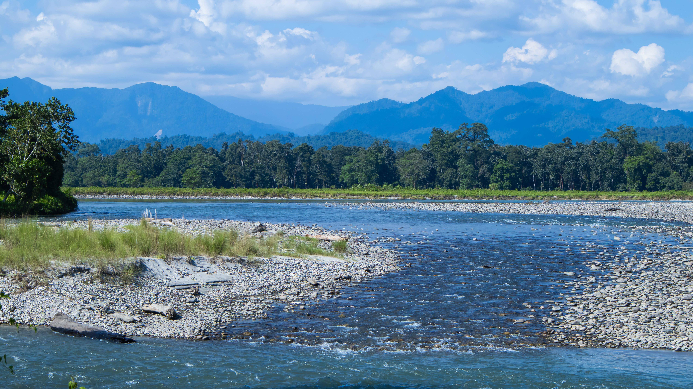
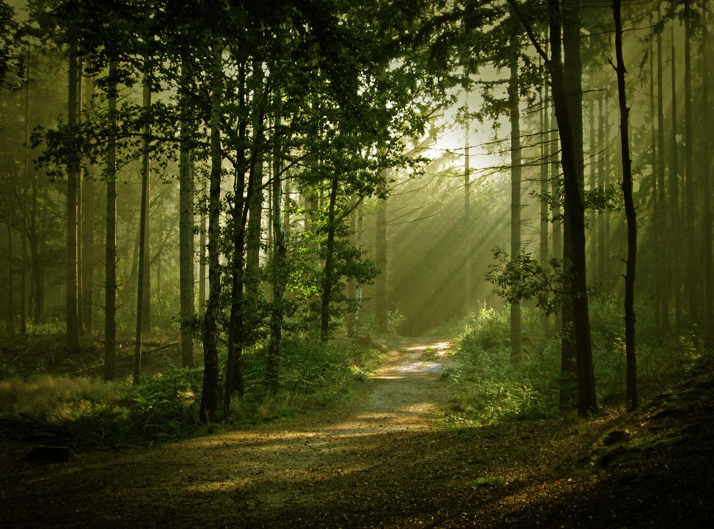
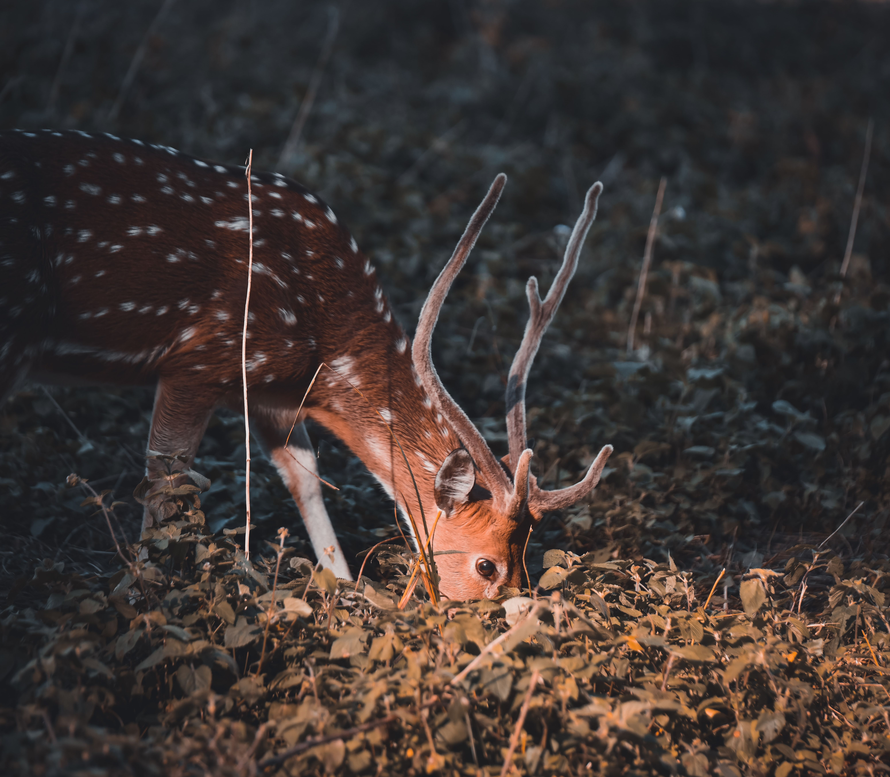
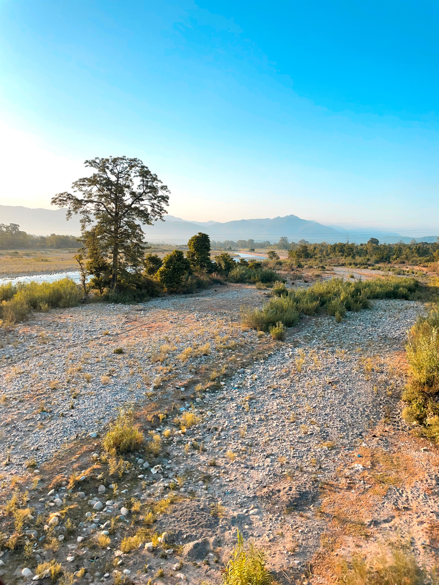
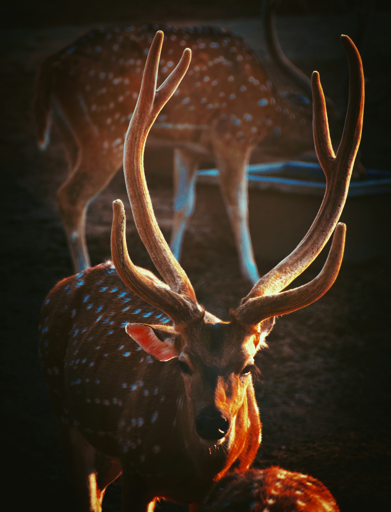

The Slow Safari
The wild was never meant to be rushed.
discover this experience

We invite you to experience Jim Corbett beyond the safari checklist. Here, the wilderness reveals itself not through speed, but through patience, silence, and presence. Cycle through forest edges, hidden villages, river trails, and forgotten paths where every sound carries meaning and every pause becomes part of the journey.
View Journey Details
3D/2N
Any
2 of 5 (Beginner Friendly)
Jim Corbett
Jim Corbett
Open for Booking
Rs. 24,000
Cycling
18+
Cycle or Electric Cycle
Private Room

Our carefully designed route lets you experience Corbett beyond the jeep tracks. Every ride uncovers a different side of the forest, where local life and wilderness exist in quiet harmony. Click on each item to see details.
Today, we ride deeper into Corbett's story, following the course of the Kosi River towards Mohan, a place woven into the history of the region and the legacy of Jim Corbett himself. Along the way, we'll pass through forest corridors, riverside stretches, and villages that exist in harmony with the wilderness. At Mohan, we'll pause to explore the landscape, hear stories of the jungle's past, and enjoy a relaxed time before beginning our return. As the day unfolds, the road reveals why some places are best understood at the pace of a bicycle.
Distance: 30 km
We begin our journey with a leisurely breakfast before setting off along riverside roads and forest-edge trails, where the rhythm of the jungle slowly replaces the noise of everyday life. Our ride leads us to Barati Rau Waterfall, hidden amongst the foothills and fed by mountain streams. Here, we'll spend unhurried time exploring the surroundings, listening to the water carve its way through the landscape and soaking in the quiet beauty of the forest before making our way back as the afternoon light filters through the trees.
Distance: 60 km






The Event Terms and Conditions detailed below apply to all participants of 'The Slow Safari' as well as attendees or participants (herein after called "Participant") participating in any of Cycle Culture's ("organizer", "we", "us", "our") cycling events.
By registering for this event, you agree to abide by all terms and conditions set forth below.
Participants must complete the registration process and pay the full event fee to secure their spot.
All participants must be at least 14 years of age at the time of the event. Those under 18 must be accompanied by a parent or legal guardian.
The organizer reserves the right to refuse entry to any participant who does not meet the requirements or fails to provide necessary documentation.
Participants will be provided with cycles and basic safety gear including helmets.
Helmets are mandatory for all participants during cycling activities. Participants are encouraged to bring personal cycling gloves and attire for comfort.
The organizer is not responsible for any damage to personal equipment during the event.
Participants should be comfortable with moderate cycling (25-30km per day) and short hikes (Tiffin Top).
Participants with pre-existing medical conditions must consult their physician before participating and inform the event organizers.
The organizer reserves the right to remove any participant from activities if they appear to be physically unable to continue or pose a risk to themselves or others.
Participants must respect local customs and traditions, especially at Kainchi Dham and other sacred sites visited during the journey.
Appropriate modest clothing is required for temple visits. Photography restrictions at certain sites must be observed.
We follow "Leave No Trace" principles, please carry back any waste and respect the natural environment.
Cancellations made more than 10 days prior to the event will receive a full refund.
Cancellations made 0-10 days prior will not receive any refund.
No refunds will be issued for cancellations made less than 10 days before the event.
The organizer reserves the right to cancel the event due to unforeseen circumstances (extreme weather, road closures, etc.). In such cases, participants will receive a full refund or option to reschedule.
A little rain is part of the adventure. Our rides and experiences continue in light to moderate rain with suitable rain gear. In cases of extreme weather where safety may be affected, the trip may be postponed or cancelled at our discretion.
By participating, each participant acknowledges the inherent risks associated with cycling and outdoor activities and agrees to participate at their own risk. Cycle Culture and its guides shall not be held liable for any injury, loss, damage, or expense arising from participation in the experience.
Participants are responsible for any significant damage to cycles, equipment, or property during the experience. Normal wear and tear and minor repairs are excluded. Repair or replacement costs arising from such damage may be charged to the participant.
A detailed liability waiver must be signed before the start of the tour.